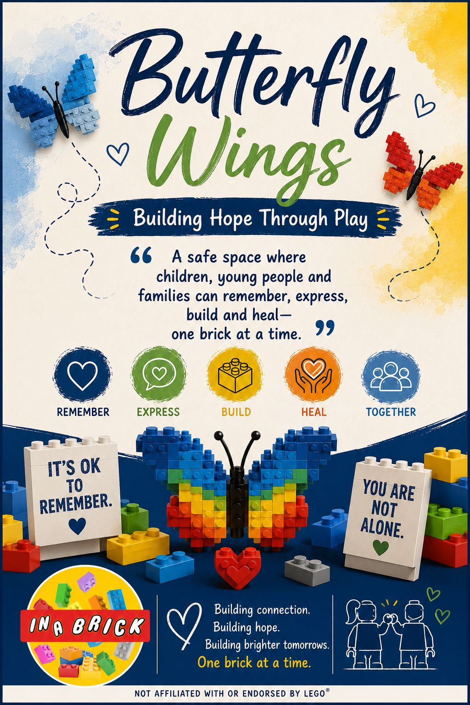

Support through play, creativity and connection
In A Brick Play offers structured brick-based sessions for social skills, communication, emotional wellbeing, bereavement support, schools, groups and events.
Bereavement support through play
A gentle, supportive programme helping children, young people and families remember, express, build and heal — one brick at a time.
Bereavement resources can include:
- Memory building activities
- Feelings and emotions prompts
- Creative remembrance builds
- Storytelling through bricks
- Family, school and small group support

Social Skills Groups
Structured brick play to support communication, teamwork, turn taking, listening, confidence and problem solving.
Sound Blocks
A communication-focused programme using bricks, rhythm, sound, listening games and structured play to support speech, language, attention and social interaction.
- Listening and attention
- Speech and language development
- Following instructions
- Turn taking and communication
1:1 Sessions
Individual support tailored to a child’s confidence, communication, emotional wellbeing and social development.
School Workshops
Structured brick-based workshops for schools, SEN settings, community groups and wellbeing programmes.
Seasonal Camps
After-school, Easter, summer, Halloween and Christmas camps with fun, purposeful building activities.
Parties and Events
Birthday parties, children’s wedding entertainment, family events and group workshops.
Not sure which programme is right?
Send us a message and we’ll help guide you towards the best option.